모든 부품을 알지 못해도,
거동은 설명할 수 있을까
이 연구는 공급압 210 bar, 실린더 3개를 사용하는 해양 너클붐 크레인을 유연 세그먼트 다물체 모델과 회색상자 전기유압 모델로 구성한다. 제조사가 공개하지 않는 밸브 특성과 마찰을 모두 물리식으로 풀기보다, 확보한 부품 자료와 시운전 측정을 연결해 필요한 파라미터를 식별한다.
보정 순서는 정상상태 힘, 정상상태 압력, 압력 진동이다. 정상상태 응답과 신장 시 동특성은 측정과 잘 맞았지만, 수축 시에는 과감쇠가 남았다. 실용적인 모델 적합에는 성공했으나, 파라미터의 유일성과 새로운 운전 조건에서의 예측력까지 입증한 것은 아니다.
식별에는 순서가 있다
먼저 하중과 마찰을 맞추고, 이어 밸브와 압력을 맞춘다. 동특성 보정은 그다음이다.
물리식과 실험식을 나눈다
CBV가 열리는 조건은 압력 평형으로, 열린 뒤의 유량은 실험 계수로 표현한다.
잘 맞는 값도 묶음일 수 있다
강성·감쇠·유효 체적탄성계수를 함께 조정했으므로 각 값의 독립적 해석에는 한계가 있다.
현장에는 완전한 데이터시트가 없다
고가이고 복잡하며 소량 생산되는 해양 시추 장비는 시제품 시험을 반복하기 어렵다. 그래서 시뮬레이션이 중요하지만, 바로 그 모델을 만드는 데 필요한 정보가 부족하다.
유압 부품 제조사가 제공하는 자료만으로는 밸브의 실제 유량 특성, 압력보상기의 응답, 실린더 마찰을 충분히 알기 어렵다. 여기에 크레인의 구조 유연성까지 더해지면, 기계와 유압을 따로 정교하게 만드는 것만으로 실제 동작이 재현되지는 않는다.
| 분류 | 대표 연구 | 남아 있던 과제 |
|---|---|---|
| 이동식 크레인 | Ellman 1996 Hansen 2001 Esque 2003 | 검증된 사례가 있으나, 트럭 크레인 특유의 유연성을 다룬다. |
| 해양 붐 크레인 | Than 2002 Bak 2011 | 유연성을 포함했지만, 해당 모델의 실험 검증이 부족했다. |
| 유압 부품 모델 | 일반 부품 모델링 문헌 | 자료 부족과 불완전한 물리 정보가 검증을 어렵게 한다. |
이 논문의 기여는 현장에서 확보할 수 있는 자료로 어느 정도의 상세도가 충분한지 실험적으로 확인한 데 있다. 유연 부재는 분할 모델로, 유압계는 회색상자로, 카운터밸런스밸브의 유량은 압력비를 이용한 블랙박스로 표현했다.
알 수 있는 물리는 남기고,
알 수 없는 특성은 측정으로 채운다.
기계의 유연성과 유압의 압축성을 함께
크레인은 페데스탈, 회전부인 킹, 세 지브, 그리핑 요크와 세 쌍의 실린더 배럴·피스톤으로 구성된다. 기본 다물체 구성은 12개 강체, 자유도 4이며, 주요 부재를 추가로 나누어 굽힘 유연성을 표현한다.
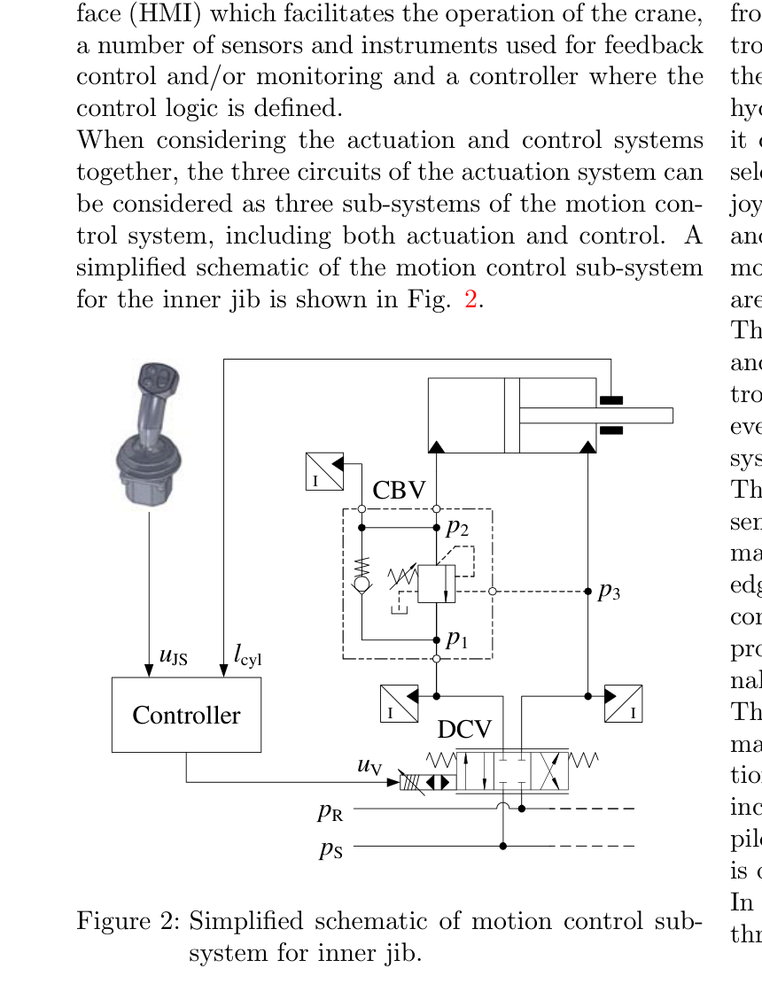
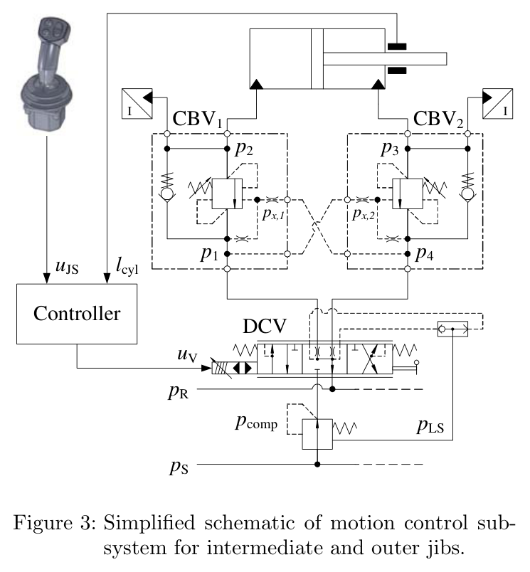
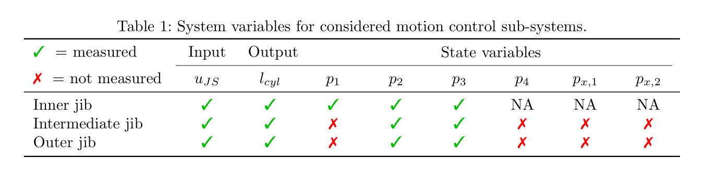
01 · DCV
2차 지연
오리피스 유량
압력보상기
02 · CBV
크래킹 조건
압력비 기반
블랙박스 유량
03 · 실린더
유체 압축성
피스톤 압력힘
마찰
04 · 다물체
기본 12개 강체
유연 세그먼트
하중과 운동
출력: 실린더 길이 lcyl, 압력 p₁–p₄ · 도식은 신호 흐름을 단순화했으며 실제 계산에서는 기계와 유압이 결합된다.
| 구성 | 모델링 선택 |
|---|---|
| 유연 부재 | 페데스탈 2조각, 내부 지브 5조각, 외부 지브 4조각. 회전 스프링 강성 kS = 2EI/L. |
| 구조 감쇠 | 강성 비례 감쇠 c = βkk, βk = 2ζS/ωS. 금속 구조의 감쇠비 범위로 ζ = 0.03–0.07을 사용. |
| 방향제어밸브 | 내부 지브는 서보밸브, 중간·외부 지브는 압력보상 비례밸브 PVG32. |
| 실린더 치수 | 노트에 제시된 피스톤 지름 Dp = 0.30 / 0.25 m, 로드 지름 Dr = 0.18 / 0.125 m. |
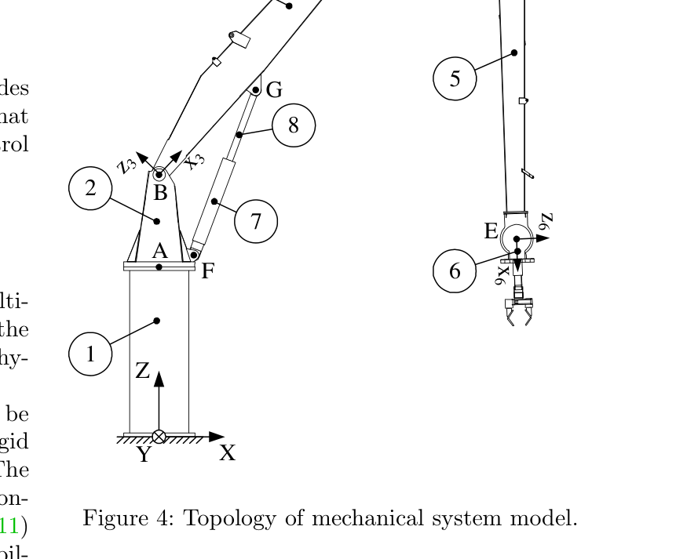
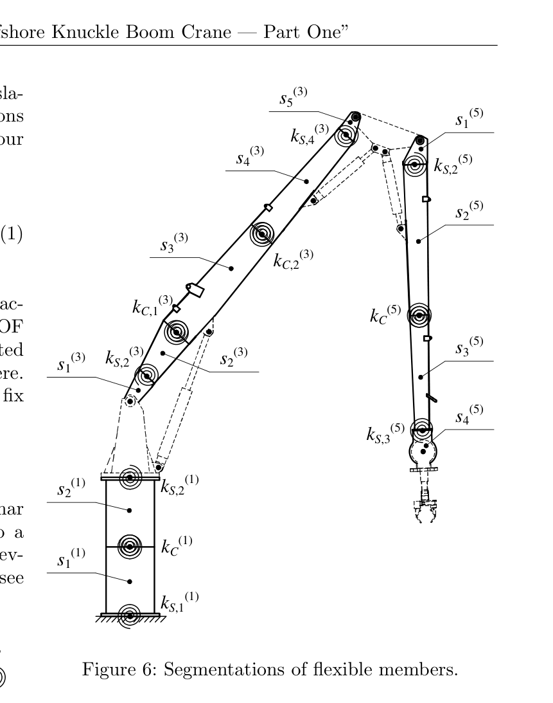
상세함보다 중요한 것은
식별할 수 있는 형태다
회색상자 모델은 물리 구조를 유지하면서 일부 계수를 데이터로 정한다. 이 연구에서는 공칭 유량을 오리피스 계수로 바꾸고, 밸브 응답을 저차 전달함수로 표현하며, 실린더 마찰을 식별 가능한 두 항으로 줄였다.
3.1 · 공칭 유량 한 점에서 시작하는 오리피스
ξ ∈ [0, 1]은 상대 열림이고, CV는 데이터시트의 공칭 유량과 공칭 압력강하에서 계산하는 유량계수다. 방출계수나 실제 개구 면적이 공개되지 않아도, 열림에 따라 유효 면적이 변한다고 가정하면 모델을 구성할 수 있다.
PVG32의 CV = 37.8 L/(min·√bar)에 압력강하 7 bar를 대입하면, 완전 열림에서 유량은 약 100 L/min이다. 공칭값을 모델의 출발점으로 삼는 방식이다.
3.2 · DCV: 스풀의 지연과 압력보상
스풀 응답은 2차 지연으로 표현한다. 압력보상 DCV는 데이터시트에 대역폭 정보가 없어 별도 주파수응답 시험으로 ωV = 30 rad/s, ζV = 0.8을 얻었다. 따라서 전체 모델 구축에 사용된 정보가 시운전 로그만인 것은 아니다.
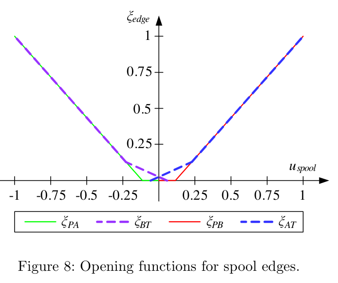
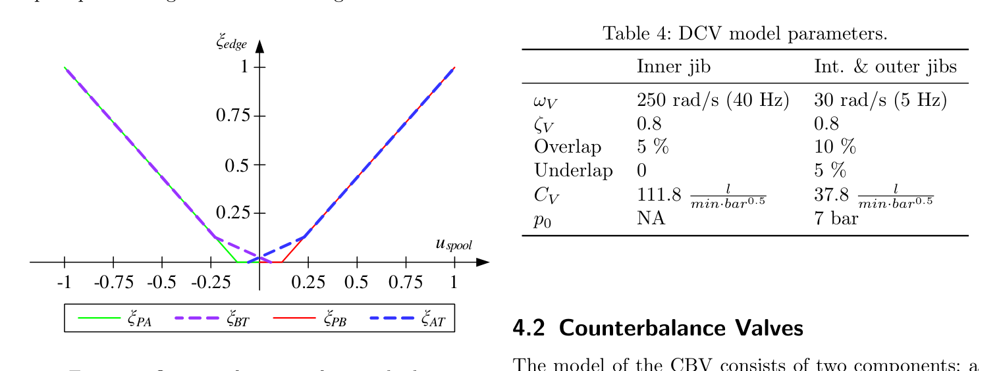
압력보상 모델은 공급압의 여유가 충분한 경우, 부하압이 공급압에 가까운 포화 구간, 역류를 막는 구간을 구분한다. 제공 노트의 식 (10) 표기는 다음과 같다.
전사 확인 사항: 위 둘째 분기는 첫째·셋째 분기와 압력 기준이 일관되는지 확인이 필요하다. 노트 표기를 보존했으며, 구현에 사용할 때는 원문의 변수 정의와 식 (10)을 대조해야 한다.
3.3 · CBV: 열리는 조건은 물리, 유량은 실험
카운터밸런스밸브(CBV)는 부하압과 파일럿 압력이 스프링 힘을 이기는 조건에서 열리기 시작한다. 하지만 열린 이후의 유량 특성은 마찰과 히스테리시스 때문에 단순한 물리식으로 충분히 설명하기 어렵다.
pL은 실린더 측 부하압, px는 파일럿 압력이다. 크래킹 압력 pcr은 250 bar, 기하학적 파일럿 면적비 ψ는 밸브에 따라 3 또는 6이다. A₀·A₁·n₀·n₁은 실험으로 식별한다.
이 절의 s는 크래킹선에서의 거리이며, DCV 전달함수의 라플라스 변수 s와 다른 기호다. 유량의 거듭제곱 식은 밸브가 열린 영역인 s > 0을 대상으로 읽는다.
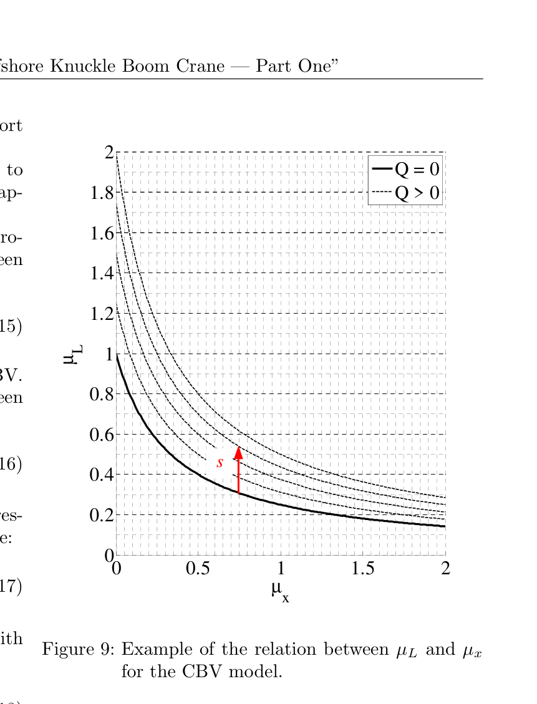
3.4 · 실린더: 압축성과 두 항의 마찰
Ap는 피스톤 면적, Aa는 로드 측 환상 면적이며 φ = Aa/Ap다. V₁·V₂는 각 챔버의 유체 체적이다. 마찰식은 크기를 나타내며 운동 방향에 따라 저항 방향이 달라진다.
| 파라미터 | 의미 | 노트에 정리된 값 |
|---|---|---|
| φ | 로드 측 / 피스톤 측 면적비 | 내부 0.64 / 외부 0.75 |
| βoil | 유효 체적탄성계수 | 식별 후 5500 bar |
| FS | 정지 마찰 항 | 초기: 피스톤 측 1 bar 상당 식별 후: 6.4 kN |
| Cp | 압력힘 비례 마찰 계수 | 0.02 → 0.029 |
Ottestad 2012의 5-파라미터 마찰 모델은 정지·쿨롱·속도·압력 효과를 포함하지만, 실린더 전용 실험 없이는 계수를 정하기 어렵다. 이 연구는 정지 마찰과 압력 비례 마찰의 두 항으로 복잡도를 낮췄다.
힘을 먼저, 압력을 다음에,
진동을 마지막에
한 축씩 천천히 왕복시키면, 정상상태 하중과 운동 시작 시의 진동을 같은 시험에서 관찰할 수 있다. 연구는 이 정보를 한꺼번에 최적화하지 않고 세 단계로 나누어 사용한다.
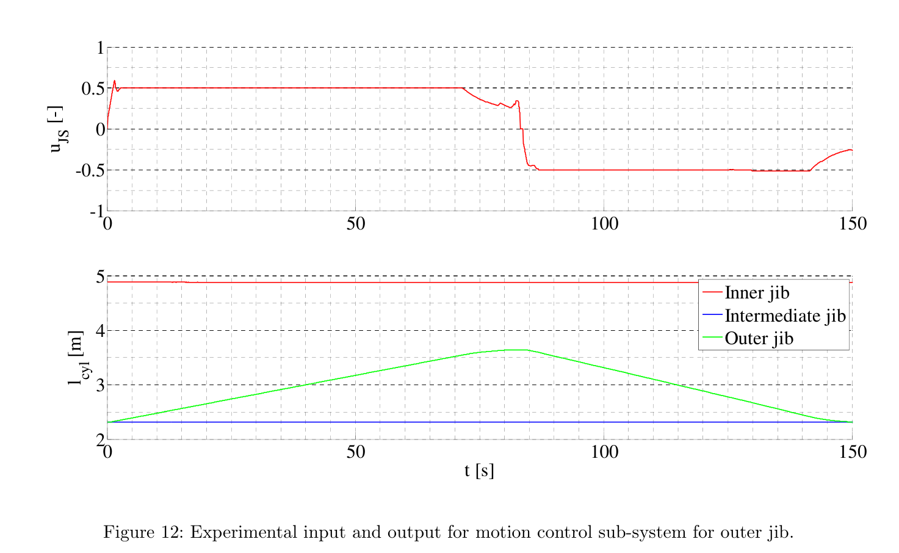
정상상태 힘 → 하중과 마찰
질량·질량중심을 미세 조정하고 FS, Cp를 식별한다. 압력힘 오차를 fmincon으로 최소화한다.
정상상태 압력 → CBV 특성
운동에서 계산한 유량과 압력비를 이용해 A₀·A₁·n₀·n₁ 및 크래킹선 보정 계수 C₁·C₂를 식별한다.
동특성 → 강성·감쇠·압축성
압력 진동을 비교하며 구조 강성 배율, 강성 비례 감쇠, 유효 체적탄성계수를 수동 조정한다.
4.1 · 정상상태 힘: 질량과 질량중심은 분리되는가
측정 압력으로부터 얻은 압력힘 F̃p와 모델의 압력힘을 비교한다. 신장과 수축에서는 마찰 부호가 달라지므로, 방향 전환 부근의 힘 차이가 마찰 식별에 정보를 제공한다.
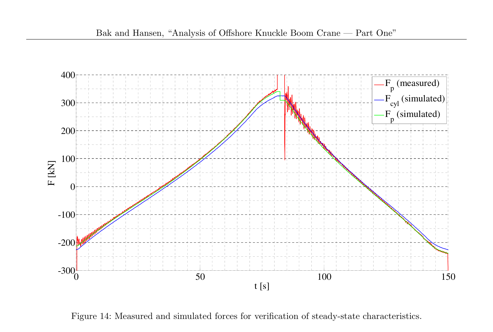
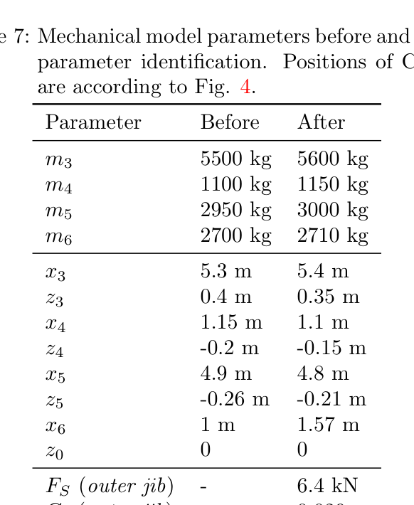
정상상태 힘은 주로 질량 × 모멘트 팔길이의 조합을 본다. 질량을 CAD 값 가까이에 묶어 두면 보정이 질량중심으로 몰릴 수 있다. 따라서 이 데이터만으로 개별 질량과 질량중심을 유일하게 분리했다고 보기는 어렵다.
4.2 · 정상상태 압력: 기하학적 파일럿비의 한계
측정한 운동에서 CBV 유량을 계산하고, 측정 압력 p₂·p₃와 회로 모델을 이용해 p₁·p₄를 추정한다. 그 후 유량 오차를 최소화하도록 블랙박스 계수를 맞춘다.
외부 지브 CBV의 기하학적 파일럿비는 ψ = 6이지만, 내부 오리피스의 영향이 포함된 유효값은 약 1.95였다. 배압 효과까지 반영하기 위해 크래킹선을 다음과 같이 보정한다.
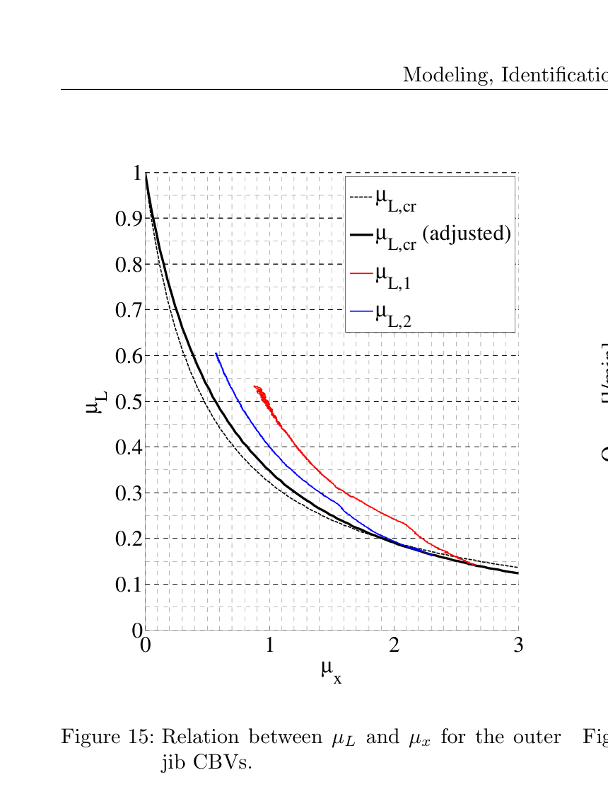
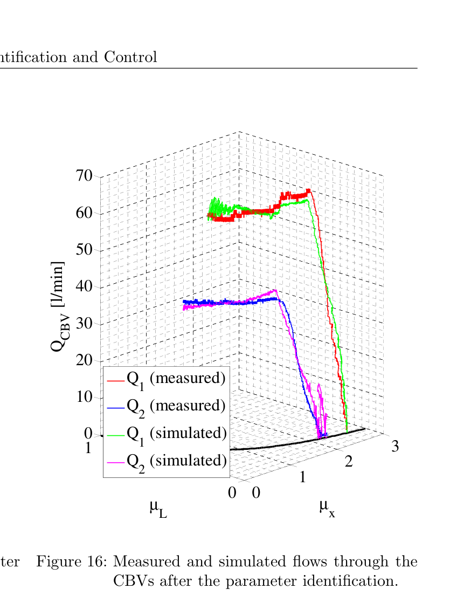
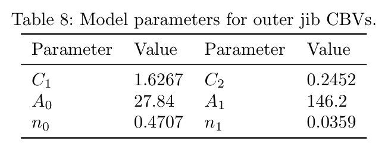
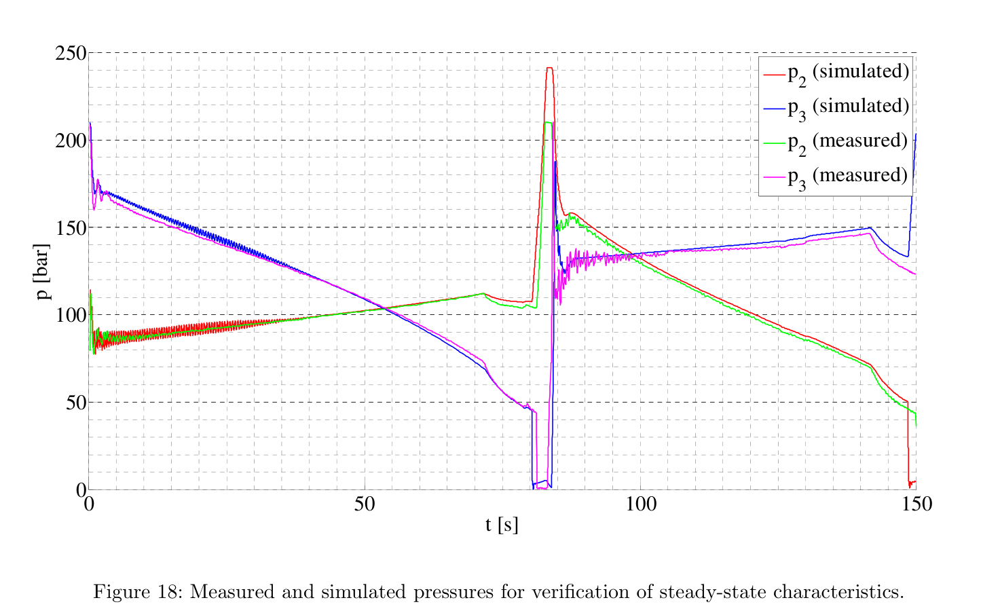
4.3 · 동특성: 모델은 실제보다 뻣뻣했다
힘과 압력의 정상 수준을 맞춘 뒤에도 진동은 달랐다. 연구는 압력 진동의 주파수와 감쇠 양상이 맞도록 구조 강성, 구조 감쇠, 유효 체적탄성계수를 함께 조정했다.
| 파라미터 | 초기 기준 | 조정 후 |
|---|---|---|
| 구조 강성 | 원문 Table 2의 값 | 전체에 0.55배 적용 |
| 감쇠 배율 βk | 0.0006–0.004 | 0.002 / 0.003 / 0.007 |
| βoil | 초기 추정값* | 5500 bar = 0.55 GPa |
* 제공 노트의 초기 βoil 항목은 배수 관계가 모호해 수치로 재구성하지 않았다. 최종 식별값 5500 bar를 기준으로 정리한다.
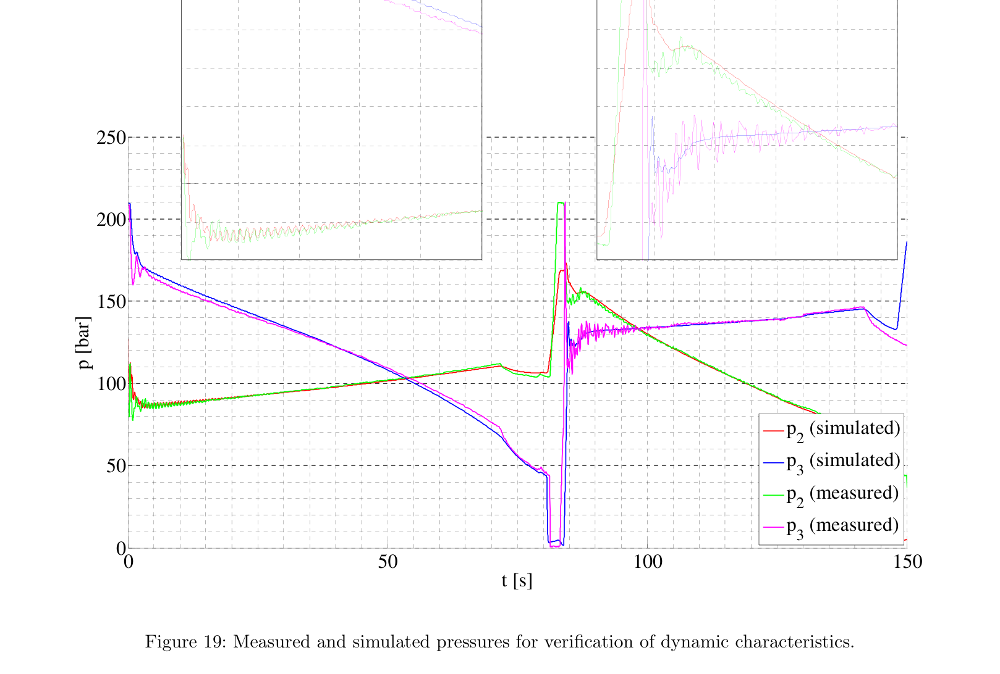
구조 강성을 0.55배로 낮춘 것은 명시적으로 유연화하지 않은 킹·중간 지브·기초의 영향을 모델이 대신 흡수한 것으로 해석할 수 있다. 이 배율을 개별 부재의 실제 강성이 절반이라는 뜻으로 읽어서는 안 된다.
여기서 βoil은 순수 오일의 물성만을 뜻하지 않는다. 배관·호스의 영향을 포함하는 계통의 유효값이다. 5500 bar는 노트가 비교한 광유의 1.5 GPa보다 낮으며, 노트에서 Merritt를 통해 인용한 6900 bar 상한보다도 낮다. 다만 이 비교값을 모든 유압계의 보편적인 범위로 적용할 수는 없다.
적합은 확인했다.
예측력은 아직 열려 있다.
결과의 강점은 정상상태 힘과 압력, 그리고 일부 동특성을 하나의 결합 모델에서 설명했다는 점이다. 다만 아래 평가는 제공 노트의 곡선 비교와 서술에 기반하며, 정량 오차나 신뢰구간을 새로 산출한 결과는 아니다.
| 평가 대상 | 주요 결과 | 증거의 범위 |
|---|---|---|
| 정상상태 힘 | 수준 일치 FS = 6.4 kN, 약 1.3 bar 상당 Cp = 0.029 | 보정 데이터의 압력힘 곡선 비교 |
| CBV 유량·압력 | 수준 일치 n₀ = 0.47 | 시험 운전 범위의 유량·압력 비교 |
| 신장 동특성 | 양호한 일치 진동 주파수·감쇠 재현 | 운동 시작 구간의 압력 진동 |
| 수축 동특성 | 잔여 불일치 시뮬레이션 과감쇠 | 방향에 따른 모델 한계가 남음 |
| 다른 하중·자세 | 미검증 | 독립 홀드아웃 검증 없음 |
한 주파수를 맞추는 여러 조합이 있다면,
잘 맞는 파라미터가 유일한 파라미터는 아니다.
남은 불확실성은 다음 시험을 가리킨다
| 한계 | 왜 중요한가 | 후속 확인 방향 |
|---|---|---|
| 계측 정보 부족 | 노트에는 표본율·동기화·센서 정확도가 기재되지 않았다. 외부 지브에서 직접 측정한 압력은 두 개다. | 계측 사양과 시간 정렬을 기록하고, 추정 압력의 오차를 평가한다. |
| 홀드아웃·불확실성 없음 | 보정에 사용한 데이터의 재현만으로 새로운 조건의 예측력을 판단하기 어렵다. | 다른 하중·자세의 데이터를 분리해 검증한다. |
| 파라미터 상쇄 | 강성·감쇠·β를 주파수에 맞춰 함께 조정해 각 효과가 섞일 수 있다. | 부재별 진동 시험으로 구조 특성을 분리한다. |
| 생략된 동작 | 엔드스톱, CBV 가속 유량, 영속도 부근 마찰을 충분히 모델링하지 않았다. | CBV 동적 시험과 실린더 단독 시험으로 보완한다. CBV 동특성은 Part Two와 연결되는 과제다. |
수축 구간의 과감쇠는 모델의 적용 범위를 보여주는 관찰이다. 생략한 효과는 원인 후보지만, 이 결과만으로 어느 한 항이 원인이라고 확정할 수는 없다.
디지털 트윈에는
숫자보다 식별 전략을 가져온다
이하의 HR35 수치와 모델 구성은 제공 노트에 담긴 프로젝트 맥락이다. 이 논문이 HR35를 시험하거나, 해당 트윈의 파라미터를 검증한 것은 아니다.
노트의 HR35 트윈은 붐의 3.3 Hz 응답을 맞추기 위해 체적탄성계수 1000 bar를 사용했다. 이 논문의 유효값 5500 bar와 큰 차이가 있다는 사실은 재점검의 출발점이다. 그러나 1000 bar를 곧바로 5500 bar로 교체할 근거는 아니다. 두 모델이 서로 다른 구조·접촉·배관 효과를 하나의 파라미터에 담고 있을 수 있기 때문이다.
- β를 바꾸기 전에 진동의 출처를 분리한다 약 3 Hz 모드에 붐 구조와 트랙 접촉 강성이 함께 들어가는지 확인한다. 차체 고정 조건과 접지 조건의 진동 비교가 분리 실험의 후보가 된다.
- 한 축씩, 느린 개루프 왕복 데이터를 확보한다 수동 폐루프·다축 동시 운전 로그는 이 논문의 단계별 식별 조건과 다르다. 같은 전략을 적용하려면 한 축씩 하중·압력·방향 전환을 해석할 수 있는 시험이 필요하다.
- 마찰의 하중 의존성을 확인한다 쿨롱+점성 마찰만 사용하는 트윈이라면 압력힘 비례 항이 필요한지 점검한다. 노트는 Werner 2025와의 공통점을 언급하지만, 해당 문헌의 상세 서지는 제공하지 않는다.
- 실린더 면적비를 실측 치수로 다시 계산한다 노트의 트윈은 세 축에 로드/보어 지름비 0.466을 일괄 가정한다. 이 논문의 지름비는 0.50–0.60이다. 지름비 r과 면적비 φ는 다르며, φ = 1 − r²로 연결된다.
좋은 모델은 다음 실험을 분명하게 만든다
이 연구가 남기는 가장 실용적인 방법은 부족한 부품 정보를 억지로 채우지 않고, 관측 가능한 정상 힘·정상 압력·진동으로 나누어 식별하는 것이다.
다음 단계는 다른 하중과 자세에서도 같은 파라미터가 설명력을 유지하는지 확인하는 일이다. 한 번의 적합을 넘어설 때, 보정된 모델은 예측하는 모델이 된다.
출처와 읽기 안내
검토 대상 논문
Morten K. Bak · Michael R. Hansen
University of Agder, Norway
Analysis of Offshore Knuckle Boom Crane — Part One: Modeling and Parameter Identification
Modeling, Identification and Control, 34(4), 157–174, 2013.
DOI: 10.4173/mic.2013.4.1 ↗
- 작성 범위. 이 글은 제공된 Obsidian 논문 요약 노트를 편집·재구성한 연구 해설이다. 원문 전체나 별도 실험 데이터를 독립적으로 재검증한 보고서는 아니다.
- 그림과 표. 원문 번호로 표시한 도판은 노트에 첨부된 이미지를 사용했다. 이미지의 번호와 본문의 식 번호는 논문 참조를 유지하며, 설명 문장은 노트에 기반한 해설이다.
- 결과의 해석. “일치”는 노트가 보고한 곡선·수준의 일치를 뜻한다. RMSE, 오차율, 파라미터 신뢰구간이나 독립 예측 검증 결과는 제공되지 않았다.
- 표기 확인. 압력보상 식 (10)의 둘째 분기와 초기 체적탄성계수의 배수 표현은 노트만으로 확정하기 어려워 본문에 확인 사항을 남겼다.
- 간접 언급 문헌. Ellman 1996, Hansen 2001, Esque 2003, Than 2002, Bak 2011, Ottestad 2012, Merritt, Werner 2025는 제공 노트의 언급을 따른다. 정확한 서지와 인용 맥락은 각 원자료에서 확인해야 한다.
- 의견의 구분. HR35에 대한 비교, 후속 시험 제안, 일부 식별 가능성 해석은 노트 작성자의 적용 의견 또는 이를 정리한 해설이며, 논문의 직접 검증 결과와 구분한다.